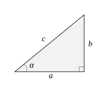
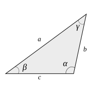
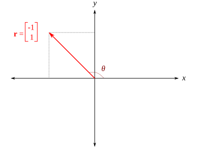
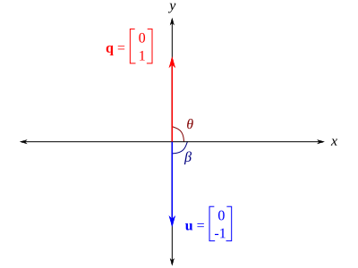

Preliminares matemáticos#
En esta sección se hará un brevísimo repaso de algunos tópicos de matemáticas universitarias de importancia para el seguimiento del curso de Cinemática de Robots. Evidentemente, lo aquí descrito es una revisión muy rápida de dichos conceptos, si requiere información más detallada o específica al respecto, puede consultar en las referencias colocadas al pie de página. [1][2][3]
Matrices#
Una matriz es un arreglo rectangular bidimensional de números (o elementos) escritos entre corchetes. Cada número de la matriz se conoce como elemento o entrada de la matriz. Los elementos de una matriz están dispuestos en filas y columnas, se denota como una matriz de \(m \times n\) (léase m por n) a aquella que se compone de \(m\) filas y \(n\) columnas. Usualmente para nombrar las matrices se utilizarán letras mayúsculas, por ejemplo sea \(A\) una matriz de \(m \times n\), de manera general puede escribirse como:
Suma de matrices#
La suma matricial está definida para matrices del mismo tamaño y se obtiene sumando los elementos correspondientes. Por ejemplo, sean \(A\) y \(B\) dos matrices de \(2 \times 2\) dadas por:
Entonces:
Multiplicación por un escalar#
Cuando una matriz se multiplica por un escalar, cada elemento de la matriz se múltiplica por dicho escalar. Sea \(A\) la matriz de \(2\times 2\) descrita con anterioridad y \(k\) un escalar, entonces:
Multiplicación de matrices#
Para que la multiplicación de matrices pueda efectuarse se debe cumplir que la matriz que premultiplica debe tener tantas columnas como filas tenga la que postmultiplica. En terminos más \textit{amables}, sea \(A\) una matriz de dimensiones \(m \times n\) y \(B\) una matriz de \( p \times q \), para poder multiplicarlas necesariamente se debe cumplir que \( n = p \), además, la matriz resultante tendrá un tamaño dado por \( m \times q \).
Sean \( A \) y \( B \) dos matrices tal que puede efectuarse el producto \(AB\) y sea \(C\) la matriz que resulta de efectuar dicho producto, es decir:
Cada elemento de la matriz \(C\) se calcula de la siguiente manera:
Por ejemplo, sean \(A\) y \(B\) dos matrices de \(2 \times 2\) definidas como sigue:
El producto \(AB\) estará dado por:
Puede verificarse que el producto de matrices satisface las siguientes propiedades:
\( (AB)^T = B^T A^T \), para toda \(A \in \mathbb{R}^{m\times p} \) y \( B \in \mathbb{R}^{p\times n} \)
En general, \(AB \neq BA\)
\( A(B+C) = AB + AC \), para toda \(A \in \mathbb{R}^{m\times p} \), \( B \in \mathbb{R}^{p\times n} \) y \( C \in \mathbb{R}^{p\times n} \) .
\( ABC = A(BC) = (AB)C \), para toda \(A \in \mathbb{R}^{m\times p} \), \( B \in \mathbb{R}^{p\times n} \) y \( C \in \mathbb{R}^{n\times r} \) .
Transpuesta de una matriz#
La transpuesta de una matriz \(A\) de \(m \times n\) se denota como \(A^T\) y es una matriz de \(n \times m\) que tiene la primera fila de \(A\) como su primera columna, la segunda fila de \(A\) como su segunda columna y así de manera sucesiva. Por tanto la transpuesta de la matriz \(A\) dada en la ecuación gral_matrix será:
Matrices antisimétricas#
Se dice que una matriz \(S\) es antisimétrica si y sólo si:
O en términos de sus elementos:
De la ecuación anterior se puede observar que \(s_{ii}=0\), es decir, que todos los elementos de la diagonal de \(S\) son ceros y que los elementos fuera de la diagonal: \(s_{ij}\) con \(j \neq i\), satisfacen que \(s_{ij} = -s_{ij}\). De manera particular, las matrices antisimétricas de \(3 \times 3\) contienen sólo tres cantidades independientes, cada matriz antisimétrica de \( 3\times 3 \) tiene la siguiente forma:
Si \(\vec{a}\) es un vector de tres componentes \( \vec{a} = \left[a_1, a_2, a_3\right]^T\), podemos definir la matriz antisimétrica \(S(\vec{a})\) como:
Las matrices antisimétricas de \(3\times 3\) pueden ser utilizadas para representar el producto vectorial como un producto de matrices. Sean \(\vec{a}\) y \( \vec{b} \) dos vectores en \( \mathbb{R}^3 \), entonces:
Esto se puede verificar de forma sencilla desarrollando directamente ambos lados de la ecuación. El operador \(S\) es un operador lineal, es decir:
Para cualesquiera vectores \(\vec{a}\) y \(\vec{b}\) en \( \mathbb{R}^3 \), y escalares \(\alpha\) y \(\beta\).
Sea \(R\) una matriz ortogonal, y \(\vec{a}\) un vector en \(\mathbb{R}^3\), se puede verificar que:
El lado izquierdo de esta ecuación representa una transformación de similitud de la matriz \(S(\vec{a})\). Esta ecuación establece que la representación matricial de \( S(\vec{a}) \) en un sistema de referencia rotado por \(R\) es la mismo que la matriz antisimétrica \( S(R\vec{a}) \) correspondiente al vector \(\vec{a}\) rotado por \(R\).
Vectores#
Un vector es una matriz que tiene una sola fila (vector fila) o columna (vector columna), en ambos casos a sus elementos se les conoce como componentes. En este texto usualmente se hará referencia a vectores columnas y de manera indistinta se denotarán como:
Producto punto#
El producto punto o producto escalar está definido para dos vectores del mismo tamaño y da como resultado un escalar. Sean \( \vec{u} = \left[ u_1 \, u_2 \, u_3 \right]^T \) y \( \vec{v} = \left[ v_1 \, v_2 \, v_3 \right]^T \) dos vectores en \(\mathbb{R}^3\), el producto escalar se calcula como:
Producto vectorial#
El producto vectorial o producto cruz de dos vectores es una operación definida para vectores en un espacio tridimensional y del cual resulta un vector perpendicular a ambos involucrados. Sean \( \vec{u} = \left[ u_1 \, u_2 \, u_3 \right]^T \) y \( \vec{v} = \left[ v_1 \, v_2 \, v_3 \right]^T \) dos vectores en \(\mathbb{R}^3\), entonces el producto vectorial está dado por:
Ángulo entre dos vectores#
El ángulo entre dos vectores se puede calcular a partir de la definición del producto escalar. Se sabe que:
Entonces:
Proyección escalar y vectorial#
La proyección escalar de un vector \(\vec{u}\) sobre un vector \( \vec{v} \) está dada por:
Donde:
La proyección vectorial de \( \vec{u} \) sobre \( \vec{v} \) se obtiene multiplicando el resultado anterior por un vector unitario en la dirección de \( \vec{v} \), es decir:
En el caso particular de que los dos vectores involucrados sean unitarios, la proyección escalar de un vector unitario \( \vecuni{u} \) sobre un vector unitario \( \vecuni{v} \) está dada por:
De la definición del producto escalar se sabe que:
Pero dado que \( \vecuni{u} \) y \( \vecuni{v} \) son vectores unitarios, entonces \( u = v = 1 \), por lo tanto:
Este resultado nos será útil posteriormente cuando estemos realizando descripción de orientaciones.
Trigonometría#
Relaciones en un triángulo rectángulo#
El triángulo rectángulo es un tipo especial de triángulo que tiene un ángulo recto, es decir, un ángulo de 90°. Los otros dos ángulos agudos suman 90° también. La propiedad más distintiva de un triángulo rectángulo es que satisface el teorema de Pitágoras:
En un triángulo rectángulo, hay tres razones trigonométricas fundamentales asociadas con un ángulo agudo (\(\alpha\)):
{kind=link}

Fig. 115 Triángulo rectángulo#
Relaciones en un triángulo oblicuángulo#
Un triángulo oblicuángulo es aquel en el cual ninguno de sus ángulos es recto. Para resolver un triángulo de este tipo, se pueden utilizar la ley de senos o la ley de cosenos, dependiendo de la información que se tenga disponible.
Ley de senos#
Para un triángulo oblicuángulo como el mostrado en la Figura Fig. 116 se cumple que:
Esta expresión se conoce como la ley de senos. La ley de senos se puede enunciar de forma general como: en cualquier triángulo, la razón entre el seno de un ángulo y el lado opuesto a ese ángulo es igual a la razón entre el seno de otro ángulo y el lado opuesto a ese ángulo.
Es sencillo notar que de la ecuación (84) se pueden obtener tres fórmulas:
Para aplicar cualquiera de estas fórmulas a un triángulo específico, debemos conocer los valores de tres de las cuatro variables. Si sustituimos estos tres valores en la fórmula apropiada, podemos entonces encontrar el valor de la cuarta variable. Se deduce que la ley de los senos se puede usar para hallar las partes restantes de un triángulo oblicuángulo, siempre que conozcamos cualquiera de lo siguiente:
Dos lados y un ángulo opuesto a uno de ellos.
Dos ángulos y cualquier lado.
{kind=link}

Fig. 116 Triángulo oblicuángulo#
Ley de cosenos#
La ley de senos no se puede utilizar para resolver un triángulo oblicuángulo en los siguientes casos:
Se conocen dos lados y el ángulo entre ellos.
Se conocen los tres lados.
En estas situaciones podemos hacer uso de la ley de cosenos, la cual establece que para un triángulo oblicuángulo como el mostrado en la Figura Fig. 116 se cumplen las siguientes tres relaciones:
La ley de cosenos se puede enunciar como El cuadrado de la longitud de cualquier lado de un triángulo es igual a la suma de los cuadrados de las longitudes de los otros dos lados, menos el doble producto de las longitudes de los otros dos lados y el coseno del ángulo entre ellos.
Algunas identidades trigonométricas#
La función arcotangente de dos argumentos \(\text{arctan2}\)#
La función arcotangente (\(\arctan\)) nos permite calcular de forma adecuada un ángulo en el rango (-90°, 90°), es decir, aquellos que corresponden al primer y cuarto cuadrante del plano cartesiano. Sin embargo, cuando el ángulo que queremos calcular corresponde al segundo o tercer cuadrante, la función \(\arctan\) no puede manejarlo de forma apropiada. Por ejemplo, vamos a suponer que queremos calcular la dirección \(\theta\) del vector \(\vec{r}\) mostrado en la Figura ., utilizando la función arctangente tendríamos que:
{kind=link}

Fig. 117 .#
Es evidente que el resultado anterior nos da un ángulo ubicado en el cuarto cuadrante, lo cual no corresponde con lo observado en la figura. Como se había mencionado, la función arcotangente ordinaria no puede manejar adecuadamente resultados cuando \( x < 0 \), puesto que al recibir un argumento único no tiene manera de saber si el signo negativo corresponde a la componente \(y\) o a la de \(x\).
La función arcotangente de dos argumentos \(\text{arctan2}\) permite calcular correctamente ángulos en todos los cuadrantes, dado que preserva la información correspondiente a los signos de cada una de las componentes. De forma simple podemos definir esta función como:
Con ayuda de esta función podríamos ahora recalcular el ángulo \(\theta\), de lo cual tendríamos que:
Dado que el segundo argumento es negativo (\( x < 0 \)), entonces:
Este resultado si que es correcto. En términos descriptivos podríamos considerar que la función arcotangente de dos argumentos hace una corrección a la función arcotangente en el caso de que la componente en \(x\) sea negativa. Esta corrección consiste en sumar 180° al resultado obtenido.
Hay un par de situaciones en las que hay que tener cuidado con la función arcotangente, puesto que si procedemos de forma usual nos conducirá a un error de cálculo, observa lo que ocurre si quisiéramos calcular la dirección del vector \( \vec{q} \) mostrado en la Figura ., tendríamos que:
Dado que la componente \(x = 0\), nuestra operación implica una división por cero, lo cual nos conduce a una indefinición. Algo similar ocurre en el caso de la dirección \(\beta\) del vector \( \vec{u} \). No podemos calcular numéricamente los ángulos, pero por inspección podemos verificar que \(\theta = 90°\) y \(\beta = -90°\).
{kind=link}

Fig. 118 .#
Tomando en cuenta lo anterior, una definición un poco más completa para la función arcotangente de dos argumentos incluye estos dos casos particulares:
Normalmente las calculadoras de bolsillo no nos dan la posibilidad de calcular de manera directa mediante la función \(\text{arctan2}\), así que usualmente tenemos que hacer uso de \(\arctan\) y hacer la corrección manualmente en el caso que corresponda. Por otro lado, los lenguajes de programación y los programas de cálculo numérico, suelen incluir una función arcotangente de dos argumentos. Por ejemplo, en Python se puede utilizar la librería math, tal como se muestra en el siguiente bloque de código:
from math import atan2, degrees
degrees(atan2(1,-1))
135.0
Derivadas#
El problema de encontrar la recta tangente a una curva y el problema de encontrar la velocidad de un objeto implican encontrar el mismo tipo de límite. Este tipo especial de límite se denomina derivada y se puede interpretar como una razón de cambio en muchas aplicaciones de ingeniería \cite{stewart}. En una gran parte de este texto utilizaremos derivadas para describir la cinemática de manipuladores, de manera específica para calcular las velocidades y aceleraciones a partir de la información de posición.
De manera general, la derivada de una función \(f\) en un número \(a\), denotada por \(f'(a)\), es:
Si este límite existe. Ahora, si en lugar de considerar un número \(a\) en la ecuación (85), utilizamos una variable \(t\), tendremos que:
Donde \( f'(t) \) es una nueva función llamada derivada de \(f\), la cual geométricamente se puede interpretar como la pendiente de la recta tangente a la gráfica de \(f\) en el punto \((t, f(t))\).
Algunas fórmulas de derivadas#
A continuación, se listan algunas fórmulas de derivadas que serán utilizadas de forma recurrente a lo largo de algunos capítulos de este texto. En general, dado que estaremos trabajando con la descripción de cinemática y dinámica de cuerpos rígidos, se considerará que la variable independiente es el tiempo \(t\).
En lo subsiguiente se utilizará la notación de Newton para las derivadas, de tal manera que, suponiendo que se tiene una \(x(t)\), entonces:
Sean \( u = u(t) \), \( v = v(t) \) y \( w = w(t)\), funciones escalares dependientes de \(t\); y sea \(a\) un escalar constante.